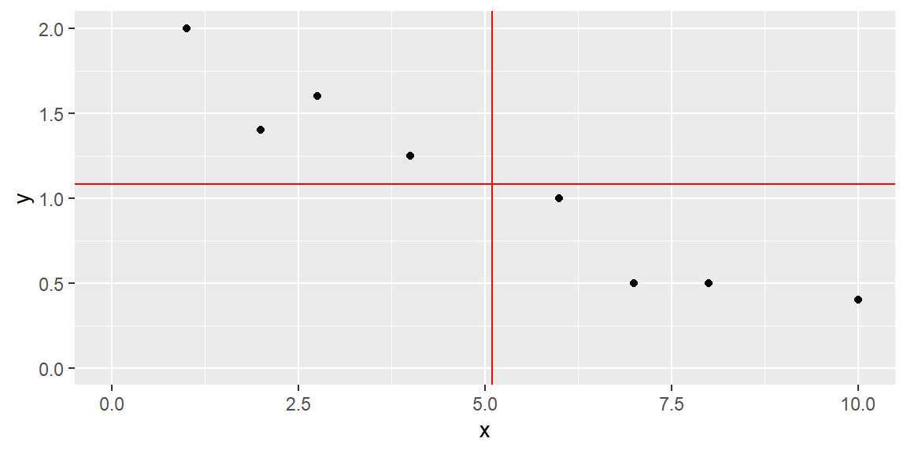
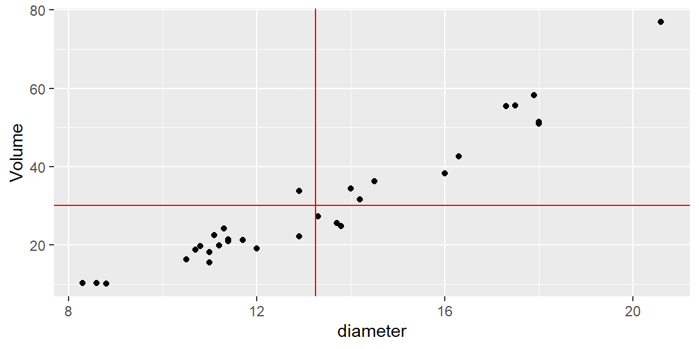
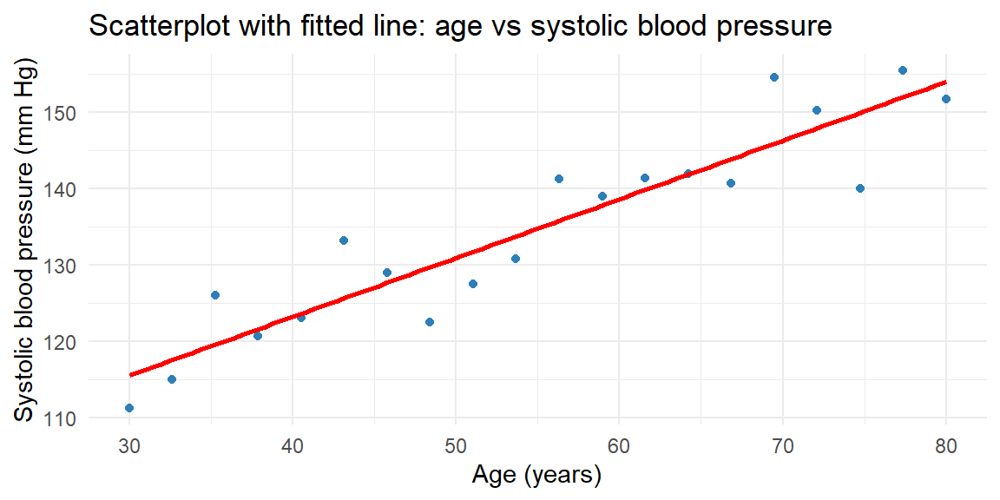
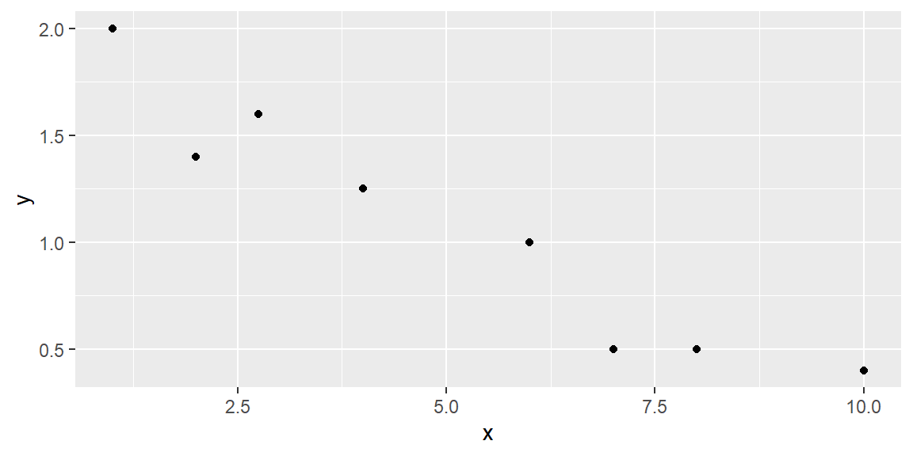
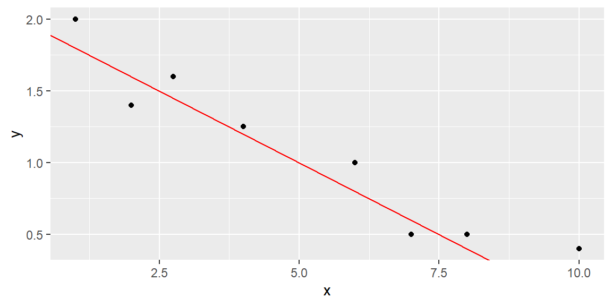
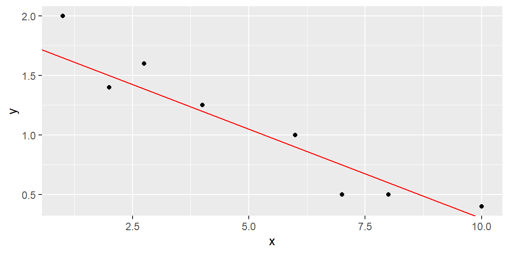
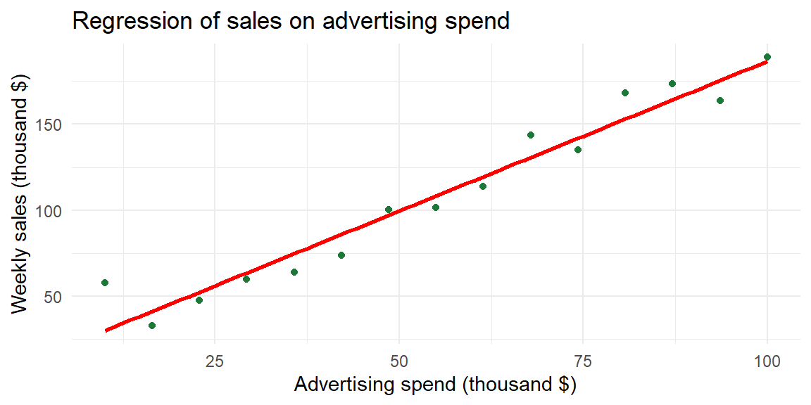

14 Correlation and Simple Linear Regression
14.1 Scatterplots and the Correlation Coefficient
“The modern student, and too often his teacher, overlook the fact that such a simple thing as a scatter diagram is a more important tool of prediction than the correlation coefficient…” – W. Edwards Deming
Guiding question: How do we visualize and measure the strength and direction of a linear relationship between two quantitative variables?
When exploring two numerical variables, the first step is to look at the variables graphically. A
Scatterplots reveal patterns that numbers alone cannot. If the points lie cluster around a straight line, the relationship is approximately
Measuring linear association
To quantify the strength and direction of a linear relationship we use the
It is computed as \[ \begin{align*} {r=\frac{SS_{xy}}{\sqrt{SS_{xx}SS_{yy}}}} \end{align*} \] where \[ \begin{align*} SS_{xy} =& \sum \left(y_i-\bar{y}\right)\left(x_i-\bar{x}\right)\\ SS_{xx} =& \sum \left(x_i-\bar{x}\right)^2\\ SS_{yy} =& \sum \left(y_i-\bar{y}\right)^2 \end{align*} \]
\(SS_{xx}\) and \(SS_{yy}\) are measures of variability of \(x\) and \(y\), respectively. That is, they indicate how \(x\) and \(y\) varies about their mean, individually.
\(SS_{xy}\) is a measure of how \(x\) and \(y\) vary together.
For example, consider the data in the scatterplot below. The two red lines represent the mean of the \(x\) variable (the vertical red line is for \(\bar{x}\)) and the mean of the \(y\) variable (the horizontal red line is for \(\bar{y}\)).
Let’s find \(SS_{xx}\), \(SS_{yy}\), and \(SS_{xy}\).
| \(x\) | \(y\) | \((x - \bar{x})^2\) | \((y - \bar{y})^2\) | \((x - \bar{x})(y - \bar{y})\) |
|---|---|---|---|---|
| 1.00 | 2.00 | 16.7587891 | 0.8441016 | -3.7611328 |
| 2.00 | 1.40 | 9.5712891 | 0.1016016 | -0.9861328 |
| 2.75 | 1.60 | 5.4931641 | 0.2691016 | -1.2158203 |
| 4.00 | 1.25 | 1.1962891 | 0.0284766 | -0.1845703 |
| 6.00 | 1.00 | 0.8212891 | 0.0066016 | -0.0736328 |
| 7.00 | 0.50 | 3.6337891 | 0.3378516 | -1.1080078 |
| 8.00 | 0.50 | 8.4462891 | 0.3378516 | -1.6892578 |
| 10.00 | 0.40 | 24.0712891 | 0.4641016 | -3.3423828 |
Note that each value in \((x_i-\bar{x})(y_i-\bar{y})\) is negative. This is because as \(x\) is below \(\bar{x}\), \(y\) is above \(\bar{y}\). Likewise, as \(x\) is above \(\bar{x}\), \(y\) is below \(\bar{y}\). In the scatterplot above, you can see how the observations are below or above these lines.
Summing up the values give us: \[ \begin{align*} SS_{xx} =& \sum \left(x_i-\bar{x}\right)^2\\ = & 69.9921875\\\\ SS_{yy} =& \sum \left(y_i-\bar{y}\right)^2\\ = & 2.3896875\\\\ SS_{xy} =& \sum \left(y_i-\bar{y}\right)\left(x_i-\bar{x}\right)\\ = & -12.3609375 \end{align*} \]
Example: Volume of lumber
In the following scatterplot, the volume of timber from 31 black cherry trees are plotted against the diamter of the tree measured at 54 inches off the ground.
Again, we plot the data with red lines representing \(\bar{x}\) and \(\bar{y}\).

| \(x\) | \(y\) | \((x - \bar{x})^2\) | \((y - \bar{y})^2\) | \((x - \bar{x})(y - \bar{y})\) |
|---|---|---|---|---|
| 8.3 | 10.3 | 24.4865349 | 394.855359 | 98.3292404 |
| 8.6 | 10.3 | 21.6075026 | 394.855359 | 92.3679501 |
| 8.8 | 10.2 | 19.7881478 | 398.839553 | 88.8385952 |
| 10.5 | 16.4 | 7.5536316 | 189.639553 | 37.8479501 |
| 10.7 | 18.8 | 6.4942768 | 129.298907 | 28.9776275 |
| 10.8 | 19.7 | 5.9945994 | 109.641165 | 25.6369823 |
| 11.0 | 15.6 | 5.0552445 | 212.313101 | 32.7611759 |
| 11.0 | 18.2 | 5.0552445 | 143.304069 | 26.9153694 |
| 11.1 | 22.6 | 4.6155671 | 57.319553 | 16.2653694 |
| 11.2 | 19.9 | 4.1958897 | 105.492778 | 21.0389178 |
| 11.3 | 24.2 | 3.7962123 | 35.652456 | 11.6337565 |
| 11.4 | 21.0 | 3.4165349 | 84.106649 | 16.9514984 |
| 11.4 | 21.4 | 3.4165349 | 76.929875 | 16.2121436 |
| 11.7 | 21.3 | 2.3975026 | 78.694069 | 13.7356920 |
| 12.0 | 19.1 | 1.5584703 | 122.566327 | 13.8208533 |
| 12.9 | 22.2 | 0.1213736 | 63.536327 | 2.7769823 |
| 12.9 | 33.8 | 0.1213736 | 13.169875 | -1.2643080 |
| 13.3 | 27.4 | 0.0026639 | 7.678262 | -0.1430177 |
| 13.7 | 25.7 | 0.2039542 | 19.989552 | -2.0191467 |
| 13.8 | 24.9 | 0.3042768 | 27.783101 | -2.9075338 |
| 14.0 | 34.5 | 0.5649220 | 18.740520 | 3.2537565 |
| 14.2 | 31.7 | 0.9055671 | 2.337940 | 1.4550468 |
| 14.5 | 36.3 | 1.5665349 | 37.565036 | 7.6711759 |
| 16.0 | 38.3 | 7.5713736 | 66.081165 | 22.3679501 |
| 16.3 | 42.6 | 9.3123413 | 154.480843 | 37.9285952 |
| 17.3 | 55.4 | 16.4155671 | 636.504069 | 102.2182726 |
| 17.5 | 55.7 | 18.0762123 | 651.731488 | 108.5395630 |
| 17.9 | 58.3 | 21.6375026 | 791.242456 | 130.8453694 |
| 18.0 | 51.5 | 22.5778252 | 454.927617 | 101.3473049 |
| 18.0 | 51.0 | 22.5778252 | 433.848585 | 98.9714984 |
| 20.6 | 77.0 | 54.0462123 | 2192.958262 | 344.2689178 |
In this example, most of the observations have \((x-\bar{x})(y-\bar{y})\) that are positive. This is because these observations have values of \(x\) that are below \(\bar{x}\) and values of \(y\) that are below \(\bar{y}\), or values of \(x\) that are above \(\bar{x}\) and values of \(y\) that are above \(\bar{y}\).
There are four observations that have a negative value of \((x-\bar{x})(y-\bar{y})\). Although they are negative, the value of \(SS_{xy}\) is positive due to all the observations with positive values of \((x-\bar{x})(y-\bar{y})\). Therefore, we say if \(SS_{xy}\) is
If \(SS_{xy}\) is zero (or close to zero), then we say \(y\) does not tend to change as \(x\) increases.
Correlation Coefficient
We first note that \(SS_{xy}\) cannot be greater in absolute value than the quantity \[ \sqrt{SS_{xx}SS_{yy}} \] We will not prove this here, but it is a direct application of the Cauchy-Schwarz inequality .
Thus, the correlation coefficient \[ \begin{align} r=\frac{SS_{xy}}{\sqrt{SS_{xx}SS_{yy}}} \end{align} \] is a value sucha that \[ -1\le r \le 1 \]
If \(r=0\), then there is no linear relationship between \(x\) and \(y\).
If \(r\) is positive, then the slope of the linear relationship is positive. If \(r\) is negative, then the slope of the linear relationship is negative.
The closer \(r\) is to one in absolute value, the stronger the linear relationship is between \(x\) and \(y\).
Because it is based on means and standard deviations, Pearson’s \(r\) is sensitive to outliers and assumes the data are reasonably normal. When one or both variables are non‑normal, a rank‑based measure such as Spearman’s rho may be used instead (not discussed in this course).
It is tempting to interpret a large correlation as evidence of
Example: Age and systolic blood pressure
To see how scatterplots and correlation work in practice, consider a small study of 20 adults ranging in age from 30 to 80 years. The response variable is systolic blood pressure (measured in mm Hg). The scatterplot below shows the relationship.

The cloud of points slopes upward, indicating a positive relationship: older participants tend to have higher systolic blood pressure. The correlation coefficient for this dataset is about 0.93, suggesting a strong positive linear association.
Some Examples of \(r\)
The best way to grasp correlation is to see examples. In Figure 14.1, scatterplots of 200 observations are shown with a least squares line.


Note how the value of \(r\) relates to how spread out the points are from the line as well as to the slope of the line.
The Population Correlation Coefficient
The correlation \(r\) is for the observed data which is usually from a sample. Thus, \(r\) is the sample correlation coefficient.
We could make a hypothesis about the correlation of the population based on the sample. We will denote the population correlation with \(\rho\). The hypothesis we will want to test is \[ \begin{align*} H_0:\rho = 0\\ H_a:\rho \ne 0 \end{align*} \]
The test statistic is \[ \begin{align} t & =\frac{r\sqrt{\left(n-2\right)}}{\sqrt{1-r^{2}}} \end{align} \]
If \(H_0\) is true, then \(t\) will have a Student’s \(t\)-distribution with \(n-2\) degrees of freedom.
Creating scatterplots and computing correlation in JMP 18
JMP makes it easy to explore the relationship between two quantitative variables:
- Create a scatterplot. Load your data into a JMP table. Choose Graph → Graph Builder, drag the explanatory variable to the X‑axis and the response variable to the Y‑axis, and select the Scatter Plot element. You can add a fitted line by clicking the blue triangle next to Fit Line.
- Compute the correlation. Choose Analyze → Multivariate Methods → Multivariate. Select your variables and click Y, Columns. JMP displays a matrix of scatterplots and gives the Pearson correlation coefficient in the correlation table. If normality is questionable, use Analyze → Multivariate → Nonparametric Correlations for Spearman’s rho.
Recap
| Keyword/Concept | Explanation |
|---|---|
| scatterplot | A graph of paired quantitative data where each point represents one observation; used to visualize the relationship between two variables. |
| Pearson’s correlation coefficient (r) | A measure of the strength and direction of a linear relationship, ranging from −1 to +1; positive values indicate direct association and negative values indicate inverse association. |
Check your understanding
- A study of 30 students reports a correlation of \(r=0.85\) between hours studied and exam score. What does this value tell you about the relationship? Would you conclude that studying more causes higher scores? Explain.
- Sketch (or describe) how a scatterplot would look if \(r\approx -0.6\). What does the sign and magnitude of this correlation tell you about the relationship?
Solutions
- The correlation of 0.85 indicates a strong positive linear association: students who study more tend to score higher. However, correlation on its own does not prove causation. Other factors (prior knowledge, test difficulty) may influence scores, and experimental control would be needed to establish a causal link.
- A correlation of \(-0.6\) produces a downward‑sloping cloud of points: as one variable increases, the other tends to decrease. The moderate magnitude (0.6) suggests a reasonably strong inverse relationship but with noticeable scatter around a straight line.
14.2 Least Squares Regression Line
“Regression. It is a universal rule that the unknown kinsman in any degree of any specified man, is probably more mediocre than he.” – Francis Galton
Guiding question: How can we use a straight line to make predictions and what makes one line better than another?
After visualizing and quantifying the relationship between two variables, the next step is to model that relationship. In simple linear regression, we seek the line that best predicts the response variable \(y\) from the explanatory variable \(x\). The model has the form \[ \begin{align*} y = \beta_0 + \beta_1 x+\varepsilon \end{align*} \] where:
- \(y\) is the response variable (also known as the
dependent variable) - \(x\) is the predictor variable (also called the
independent variable or explanatory variable) - \(\varepsilon\) is the random error component
- \(\beta_0\) is the y-intercept of the line (the point where the line intersects the y-axis)
- \(\beta_1\) is the slope of the line (the change in the mean of \(y\) for every 1-unit increase in \(x\))
We use Greek symbols \(\beta_0\) and \(\beta_1\) to denote the y-intercept and slope of the line. These are population parameters with values that would only be known if we had access to the entire population of \((x, y)\) measurements.
Review: Greek Letters in Notation
Usually, in Statistics, lower-case Greek letters are used to denote population parameters. In our model above, we have an exception. The Greek letter \(\varepsilon\) is not a parameter, but a random variable (parameters are not random variables in frequentist statistics).
Fitting the Model: The Method of Least Squares
Suppose we have the data shown in Table 14.1 below and plotted in the scatterplot in Figure 14.2.
| x | y |
|---|---|
| 1 | 2 |
| 2 | 1.4 |
| 2.75 | 1.6 |
| 4 | 1.25 |
| 6 | 1 |
| 7 | 0.5 |
| 8 | 0.5 |
| 10 | 0.4 |

We hypothesize that a straight-line model relates y to x, as follows:
\[ y = \beta_0 + \beta_1 x + \varepsilon \]
How can we use the data from the eight observations in Table 14.1 to estimate the unknown y-intercept (\(\beta_0\)) and slope (\(\beta_1\))?
We can start by trying some lines and see how well they fit the data. But how do we measure how well a line fits the data?
A quantitative method to evaluate how well a straight line fits a set of data is by measuring the deviations of the data points from the line.
Review: Deviations of Response Variable
\(y\) is the variable of interest, so we are focused on the differences between observed \(y\) and the predicted value of \(y\)
We calculate the magnitude of the deviations (the differences between observed and predicted values of \(y\)).
These deviations, or prediction errors, represent the vertical distances between observed and predicted values of \(y\).
Suppose we try to fit the line \[ \hat{y} =2-.2x \tag{14.1}\]
This line can be seen in Figure 14.3.

The observed and predicted values of \(y\), their differences, and their squared differences are shown in the table below.
| \(x\) | \(y\) | \(\hat{y}\) | \((y - \hat{y})\) | \((y - \hat{y})^2\) |
|---|---|---|---|---|
| 1 | 2 | 1.8 | 0.2 | 0.004 |
| 2 | 1.4 | 1.6 | -0.2 | 0.004 |
| 2.75 | 1.6 | 1.45 | 0.15 | 0.0225 |
| 4 | 1.25 | 1.2 | 0.05 | 0.0025 |
| 6 | 1 | 0.8 | 0.2 | 0.04 |
| 7 | 0.5 | 0.6 | -0.1 | 0.01 |
| 8 | 0.5 | 0.4 | 0.1 | 0.01 |
| 10 | 0.4 | 0 | 0.4 | 0.16 |
Note that the sum of the errors (SE) is 0.8, and the sum of squares of the errors (SSE), which emphasizes larger deviations from the line, is 0.325.
We can try another line to see if we do better at predicting \(y\) (that is, have smaller SSE).
Let’s try the line \[ \hat{y} =1.8-.15x \tag{14.2}\]
This line can be seen in Figure 14.4.

The fit results are shown in Table 14.3.
| \(x\) | \(y\) | \(\hat{y}\) | \(y - \hat{y}\) | \((y - \hat{y})^2\) |
|---|---|---|---|---|
| 1 | 2 | 1.65 | 0.35 | 0.1225 |
| 2 | 1.4 | 1.5 | -0.1 | 0.01 |
| 2.75 | 1.6 | 1.3875 | 0.2125 | 0.04515625 |
| 4 | 1.25 | 1.2 | 0.05 | 0.0025 |
| 6 | 1 | 0.9 | 0.1 | 0.01 |
| 7 | 0.5 | 0.75 | -0.25 | 0.0625 |
| 8 | 0.5 | 0.6 | -0.1 | 0.01 |
| 10 | 0.4 | 0.3 | 0.1 | 0.01 |
The SSE for this line is 0.2727, which is lower than the SSE for the previous line, indicating a better fit.
While we could try additional lines to achieve a lower SSE, there are infinitely many possibilities since \(\beta_0\) and \(\beta_1\) can take any real value.
Using Calculus, we can attempt to minimize the SSE for the generic line \[\begin{align*} \hat{y} = b_0 +b_1 x \end{align*}\]
We will denote the sum of the squared distances with \(Q\): \[ Q=\sum \left(y_i-\hat{y}_i\right)^2 \tag{14.3}\]
We determine the “best” line as the one that minimizes \(Q\).
For those who want to see the math:
To minimize \(Q\), we differentiate it with respect to \(b_{0}\) and \(b_{1}\): \[\begin{align*} \frac{\partial Q}{\partial b_{0}} & =-2\sum \left(y_{i}-\left(b_{0}+b_{1}x_{i}\right)\right)\\ \frac{\partial Q}{\partial b_{1}} & =-2\sum x_{i}\left(y_{i}-\left(b_{0}+b_{1}x_{i}\right)\right) \end{align*}\]
Setting these partial derivatives equal to 0, we have \[\begin{align*} -2\sum \left(y_{i}-\left(b_{0}+b_{1}x_{i}\right)\right) & =0\\ -2\sum x_{i}\left(y_{i}-\left(b_{0}+b_{1}x_{i}\right)\right) & =0 \end{align*}\] Looking at the first equation, we can simplify as \[\begin{align*} -2\sum \left(y_{i}-\left(b_{0}+b_{1}x_{i}\right)\right)=0 & \Longrightarrow\sum \left(y_{i}-\left(b_{0}+b_{1}x_{i}\right)\right)=0\\ & \Longrightarrow\sum y_{i}-\sum b_{0}-b_{1}\sum x_{i}=0\\ & \Longrightarrow\sum y_{i}-nb_{0}-b_{1}\sum x_{i}=0\\ & \Longrightarrow\sum y_{i}=nb_{0}+b_{1}\sum x_{i} \end{align*}\]
Simplifying the second equation gives us \[\begin{align*} -2\sum x_{i}\left(y_{i}-\left(b_0+b_1x_{i}\right)\right)=0 & \Longrightarrow\sum x_{i}\left(y_{i}-\left(b_0+b_1x_{i}\right)\right)=0\\ & \Longrightarrow\sum x_{i}y_{i}-b_0\sum x_{i}-b_1\sum x_{i}^{2}=0\\ & \Longrightarrow\sum x_{i}y_{i}=b_0\sum x_{i}+b_1\sum x_{i}^{2} \end{align*}\]
The two equations \[ \begin{align} \sum y_{i} & =nb_0+b_1\sum x_{i}\nonumber\\ \sum x_{i}y_{i} & =b_0\sum x_{i}+b_1\sum x_{i}^{2} \end{align} \tag{14.4}\]
are called the normal equations.
We now have two equations and two unknowns (\(b_0\) and \(b_1\)). We can solve the equations simultaneously. We solve the first equation for \(b_0\) which gives us \[\begin{align*} b_0 & =\frac{1}{n}\left(\sum y_{i}-b_1\sum x_{i}\right)\\ & =\bar{y}-b_1\bar{x}. \end{align*}\]
We now substitute this into the second equation in Equation 14.4. Solving this for \(b_1\) gives us \[\begin{align*} & \sum x_{i}y_{i}=b_0\sum x_{i}+b_1\sum x_{i}^{2}\\ & \quad\Longrightarrow\sum x_{i}y_{i}=\left(\bar{y}-b_1\bar{x}\right)\sum x_{i}+b_1\sum x_{i}^{2}\\ &\quad\Longrightarrow b_1=\frac{\sum \left(x_{i}-\bar{x}\right)\left(y_{i}-\bar{y}\right)}{\sum \left(x_{i}-\bar{x}\right)^{2}}. \end{align*}\]
To show these estimators are the minimum, we take the second partial derivatives of \(Q\): \[\begin{align*} \frac{\partial^{2}Q}{\partial\left(b_{0}\right)^{2}} & =2n\\ \frac{\partial^{2}Q}{\partial\left(b_{1}\right)^{2}} & =2\sum x_{i}^{2} \end{align*}\] Since these second partial derivatives are both positives, then we know the least squares estimators are the minimum.
The line that best fits the data (that is minimizes \(Q\) above) has the following y-intercept and slope: \[ \begin{align} b_0 & =\bar{y}-b_1\bar{x}\\ b_1 & =\frac{\sum \left(x_{i}-\bar{x}\right)\left(y_{i}-\bar{y}\right)}{\sum \left(x_{i}-\bar{x}\right)^{2}} \end{align} \tag{14.5}\]
These equations are called the
The least squares estimators in Equation 14.5 can be expressed in simpler terms if we let \[\begin{align*} SS_{xx} &= \sum \left(x_i-\bar x\right)^2 \\ SS_{xy} &= \sum \left(x_i-\bar x\right)\left(y_i - \bar y\right) \end{align*}\]
The least squares estimates become \[\begin{align} {b_1=\frac{SS_{xy}}{SS_{xx}}}\\ {b_0=\bar{y}-b_1\bar{x}} \end{align}\]
To recap: The straight line model for the response \(y\) in terms of \(x\) is \[\begin{align*} {y = \beta_0 + \beta_1 x + \varepsilon} \end{align*}\]
The fitted line (also called the least squares line) is \[\begin{align*} {\hat{y} = b_0 + b_1 x } \end{align*}\]
For a given data point, \((x_i, y_i)\), the observed value of \(y\) is denoted as \(y_i\) and the predicted value of \(y\) is obtained by substituting \(x_i\) into the prediction equation: \[\begin{align*} {\hat{y}_i = b_0 + b_1 x_i } \end{align*}\]
The deviation of the \(i\)th value of \(y\) from its predicted value, called the \(i\)th residual, is \[ \begin{align*} {e_i= \left(y_i-\hat{y}_i\right) } \end{align*} \] Thus, SSE is just the sum of the squared residuals: \[ SSE = \sum_{i=1}^n \left(y_i-\hat{y}_i\right)^2 \]
In practice we seldom calculate these estimates by hand; software computes them for us.
Example: Advertising and sales (business)
Consider the business example introduced earlier. The advertising budget (in thousands of dollars) serves as \(x\), and weekly sales (in thousands of dollars) serve as \(y\). A scatterplot suggests a strong positive association. Fitting a regression line by least squares yields an equation of the form
\[ \widehat{y} = 12.47 + 1.74 x, \]
meaning that each additional thousand dollars spent on advertising is associated with an estimated increase of about 1.74 thousand dollars in weekly sales. The intercept (12.47) is the predicted sales when advertising spend is zero. Depending on context, the intercept may or may not have a meaningful interpretation; often it represents an extrapolation outside the observed data range.
Below is the scatterplot with the fitted regression line.

The slope 1.74 tells us that for each thousand‑dollar increase in advertising, sales increase by about 1.71 thousand dollars. The intercept 12.47 suggests that if a store spent nothing on advertising, the model predicts $12,470 in weekly sales. In reality, such an extrapolation may not be reasonable; always interpret the intercept within the range of your data.
Performing regression in JMP 18
To fit a simple linear regression in JMP:
- Load your data. Import or enter the variables into a JMP table.
- Fit the line. Choose Analyze → Fit Y by X. Assign the response variable to Y, Response and the explanatory variable to X, Factor, then click OK. A scatterplot appears with red triangles above it. Click the red triangle ► and select Fit Line. JMP displays the regression line, the estimated coefficients (\(b_0\) and \(b_1\)), and the analysis of variance table.
Recap
| Keyword/Concept | Explanation |
|---|---|
| simple linear regression | A model relating a quantitative response \(y\) to a single quantitative predictor \(x\) via a straight line. |
| least squares | A method that determines the intercept and slope by minimizing the sum of squared residuals. |
| slope (\(b_1\)) | The change in the predicted response for a one‑unit increase in the explanatory variable; its sign indicates the direction of the relationship. The population slope is denoted \(\beta_1\) |
| intercept (\(b_0\)) | The predicted response when the explanatory variable equals zero; may or may not have a meaningful interpretation depending on context. The population intercept is denoted \(\beta_1\). |
| residual | The difference between an observed \(y\) value and its predicted value \(e_i = y_i - \widehat{y}_i\). |
Check your understanding
- Suppose you fit a regression model \(\widehat{y}=2.5 + 0.8x\) relating hours of study (x) to exam score (y). Interpret the slope and the intercept.
- Explain why the least squares method squares the residuals instead of simply summing them.
Solutions
- The slope 0.8 means that for each additional hour of study, the predicted exam score increases by 0.8 points. The intercept 2.5 is the predicted exam score for a student who studies zero hours; it may not be meaningful if the data do not include students who studied so little.
- Residuals can be positive or negative. If we simply added them, positive and negative errors would cancel out, giving a misleading impression of model fit. Squaring the residuals makes them all positive and penalizes larger discrepancies more heavily, ensuring that the line minimizes overall error.